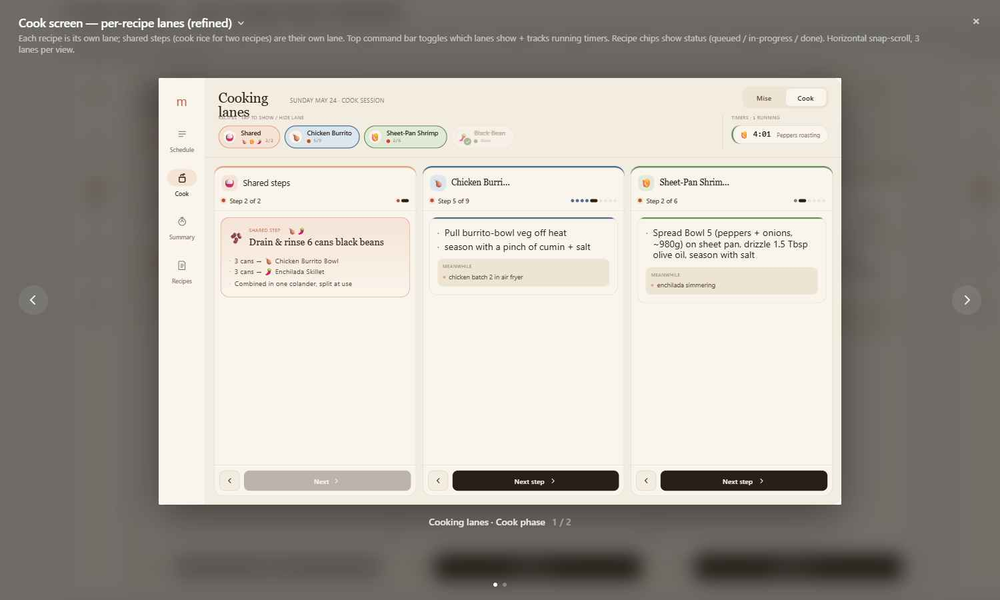
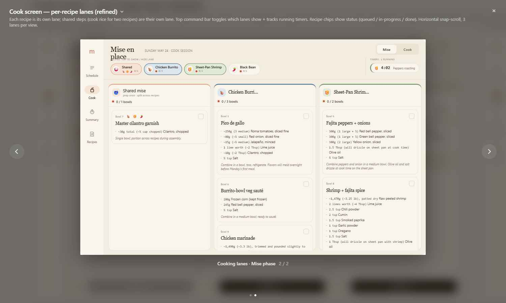

A focused implementation brief for the Cook-tab redesign, expressed as a diff against the app you already shipped. Everything else — Login, Home/Schedule, Summary, Recipe drill-down, theme, Nav3, Hilt, Firebase auth + sync — stays as-is. Read Cook Redesign — Design Delta.html first for the what-and-why; this is the how.
handoff/Claude Code prompt.html: Kotlin, Jetpack Compose, Material 3, Navigation 3, Hilt, Firebase. minSdk 36. Reuse all of it. This brief only adds/replaces composables under ui/screen/cook/ and a couple of domain helpers.
misePhase (bowls + standalones) and cookPhase (steps). There is no shared cookPlan, no Phase 0/1/2, and no server-authored "shared" data (sharedWith / array forRecipeId are gone, by design). The Shared lanes are generated entirely app-side from whatever recipes are in the current plan — which is exactly what lets the user assemble custom local cook plans (mixing recipes from any week). Renames vs v2: cook step task → steps: List<String>; bowl instruction → steps: List<String>; bowls/steps carry canonical ingredients[].ingredientId; long-running kickoffs are flagged cookStep.backgroundable=true (the old Phase 0). Full shape: the cook-card-toolchain consumer contract.


Pure-Kotlin helpers in domain/usecase/ (unit-testable, no Android):
data class RecipeCookGuide(val recipe: Recipe, val steps: List<CookStep>)
data class SharedStep(
val id: String,
val title: String,
val emoji: String,
val recipeIds: List<RecipeId>,
val task: List<String>, // bulleted lines
val runtime: String?, // e.g. "~40 min unattended"
)
// COOK (v3): recipe.cookPhase.steps are ALREADY per-recipe — no grouping needed.
// The shared cook track is DERIVED app-side: across the selected recipes, group
// backgroundable steps (cookStep.backgroundable) that share an ingredientId AND
// the same preparation (so "cook rice" hoists, but coconut rice & plain rice do not).
class BuildCookGuidesUseCase {
// input is the SELECTED recipes (the current plan), not a single card's shared plan
operator fun invoke(recipes: List<Recipe>): Pair<List<RecipeCookGuide>, List<SharedStep>>
}
// MISE (v3): recipe.misePhase.bowls are ALREADY per-recipe. The shared mise track is
// DERIVED by merging bowl ingredients across recipes by (ingredientId, unit, preparation);
// combinable=false items never pool. Same merge whether the recipes come from one week
// or a custom cross-week plan.
data class RecipeMiseGuide(val recipe: Recipe, val bowls: List<MiseBowl>)
class BuildMiseGuidesUseCase {
operator fun invoke(recipes: List<Recipe>): Pair<List<RecipeMiseGuide>, List<MiseBowl>> // perRecipe, shared
}sharedWith on steps or rely on an array forRecipeId on bowls — v3 has neither, by design. Shared work is computed locally from the self-contained recipes in the current plan: mise by the (ingredientId, unit, preparation) merge, cook by grouping backgroundable steps with a matching ingredientId+preparation. Keying off canonical ingredientId is what makes custom local cook plans (recipes mixed from any week) work — there is no per-week shared authoring to depend on.
Replace CookViewModel. One screen, two phases, independent per-phase lane visibility.
enum class CookPhase { MISE, COOK }
data class LaneId(val value: String) // recipeId, or "shared"
data class CookUiState(
val phase: CookPhase = CookPhase.COOK,
val guides: List<RecipeCookGuide>,
val sharedSteps: List<SharedStep>,
val miseGuides: List<RecipeMiseGuide>,
val sharedBowls: List<MiseBowl>,
// INDEPENDENT per phase — do not share between Mise and Cook
val visibleByPhase: Map<CookPhase, List<LaneId>>,
// cook progress
val stepIndex: Map<RecipeId, Int>,
val sharedStepIndex: Int,
val completed: Set<RecipeId>,
// mise progress (persisted)
val checkedBowls: Set<BowlId>,
// timers (command bar)
val timers: List<ActiveTimer>,
val startedTimerStepIds: Set<String>,
)
// intents
fun setPhase(p: CookPhase)
fun toggleLane(phase: CookPhase, id: LaneId) // also emits a "scroll to lane" effect
fun advanceRecipe(id: RecipeId, delta: Int) // +1 past last → mark complete + hide lane
fun advanceShared(delta: Int)
fun toggleBowl(id: BowlId)
fun startStepTimer(step: CookStep)
fun dismissTimer(timerId: String)Status per chip is derived: Cook → done if completed, else active if a stepIndex exists, else queued. Mise → done if all the recipe's bowls are checked, else active.
ui/screen/cook/
├── CookScreen.kt // collects state; routes phone vs tablet (tablet-first)
├── CookTabletScreen.kt // Column { Title+Toggle; CommandBar; LaneScroller }
├── components/
│ ├── PhaseToggle.kt // Mise | Cook segmented
│ ├── CommandBar.kt // recipes group (chips) | divider | timers group
│ ├── RecipeCommandChip.kt // emoji + name + status dot + progress; toggles lane
│ ├── SharedCommandChip.kt // 🍚 + emojis + count
│ ├── RunningTimerChip.kt // mm:ss + title; tap = dismiss
│ ├── LaneScroller.kt // HorizontalLane row, snap, edge fade+chevron
│ ├── CookLane.kt // header + StepCard + back/next footer
│ ├── MiseLane.kt // header + vertical bowl checklist
│ ├── SharedCookLane.kt // neutral header + shared StepCard + back/next
│ ├── SharedMiseLane.kt // neutral header + shared bowl checklist
│ ├── StepCard.kt // clock-less; bulleted task; Meanwhile; start-timer button
│ ├── MiseBowlCard.kt // expanded ↔ collapsed (checked) states
│ ├── LaneHeader.kt // recipe identity + status label + ProgressDots
│ └── ProgressDots.kt
└── CookViewModel.ktRow with two groups separated by a 1dp divider; each group is a horizontally-scrollable LazyRow.SharedCommandChip first, then a RecipeCommandChip per cookable recipe. Chip = rounded pill; selected (visible) = recipe-wash fill + 1.5dp recipe-colored ring; done+hidden = 55% alpha.5/9 cook, 0/3 bowls mise, or "queued"/"done").toggleLane; if it becomes visible, fire a one-shot effect to animateScrollToItem the lane in the scroller.Fixed width = (viewportWidth − horizontalPadding*2 − gap*2) / 3, min ≈ 280dp. Column: header (recipe identity + bold status label like "Step 5 of 9" in ink-2 12sp 600 + ProgressDots) / body / footer. Recipe lanes carry a 3dp recipe-color top border; shared lanes use accent-soft.
StepCard for the current step (vertically scrollable; reuse the v1 fade+chevron overflow indicator).advanceRecipe(+1) → marks complete and removes the lane.cookStep.steps: List<String> — v3 renamed task→steps; already a list of prose lines, no InstructionStep wrapper).handsOff (unchanged).step.timer != null && step.id !in startedTimerStepIds: a dark "Start timer · {timer.label} · mm:ss" button → startStepTimer. Once started: a muted "{timer.label} running · see top bar" row. (v3 Timer = {label, durationSeconds}.)MiseBowlCard. No footer.bowlNumber) · (shared: recipe emojis) · checkbox; name (serif 16sp); bulleted ingredient lines (ingredients[].quantity+unit mono + name); the bowl's prose steps (v3 renamed instruction→steps: List<String>, max 3 lines).surface-2 bg, 70% alpha. Tapping the checkbox toggles back.{checked}/{total} bowls"; done when all checked.LazyRow with rememberLazyListState() + rememberSnapFlingBehavior(lazyListState) so lanes page one at a time.canScrollForward, overlay a gradient (bg→transparent) + a 30dp circular chevron, pointerEvents off.animateScrollToItem.Same model and behavior as the original handoff (in-memory tick for display + AlarmManager for the real fire, foreground service, notification on expiry while backgrounded). The only UI change: running timers render as chips in the command bar, and the start affordance is the in-card "Start timer" button. ActiveTimer gains stepId so a started step can be detected for the pending→running swap.
Per the original handoff, persist user state keyed by cookCardId across process death. For v2 this now includes, additionally:
Cook(initialStepId?); optionally add initialPhase: CookPhase so Home's phase jump-links can deep-link to Mise or Cook.cookPhase, flagged cookStep.backgroundable=true. Surface them first in each recipe's cook lane; the app's shared-cook derivation hoists any that match across the selected recipes (same ingredientId+preparation, e.g. rice). The Cook tab renders no separate Phase 0; the Schedule tab is unchanged.BuildCookGuidesUseCaseTest — selected v3 recipes → one cook guide each from cookPhase.steps; a no-cook recipe (chia: a single assemble/chill step) yields a trivial lane; two recipes with a backgroundable step sharing ingredientId+preparation (e.g. white-rice) produce one shared cook step carrying both recipeIds.BuildMiseGuidesUseCaseTest — two recipes whose bowls share an ingredient with matching (ingredientId, unit, preparation) → that ingredient merges into the shared mise track (quantities summed); combinable=false items stay per-recipe.CookViewModelTest (Turbine): toggleLane is independent per phase; advanceRecipe past last marks complete + removes lane; startStepTimer moves pending→running and adds stepId; toggleBowl flips checked.CookTabletScreenTest (createComposeRule): Mise/Cook toggle swaps lane bodies; tapping a hidden recipe chip shows its lane; "Done · finish" removes a lane but leaves its chip; checking a mise bowl collapses the card (assert ingredient text gone, name present).LaneScrollerTest — with 4+ visible lanes, the edge chevron appears; tapping an off-screen chip scrolls it into view.Cook Redesign.html (root), components in app/screen-cook-v2.jsx. Read it to disambiguate spacing, colors, and interaction details the spec leaves implicit.